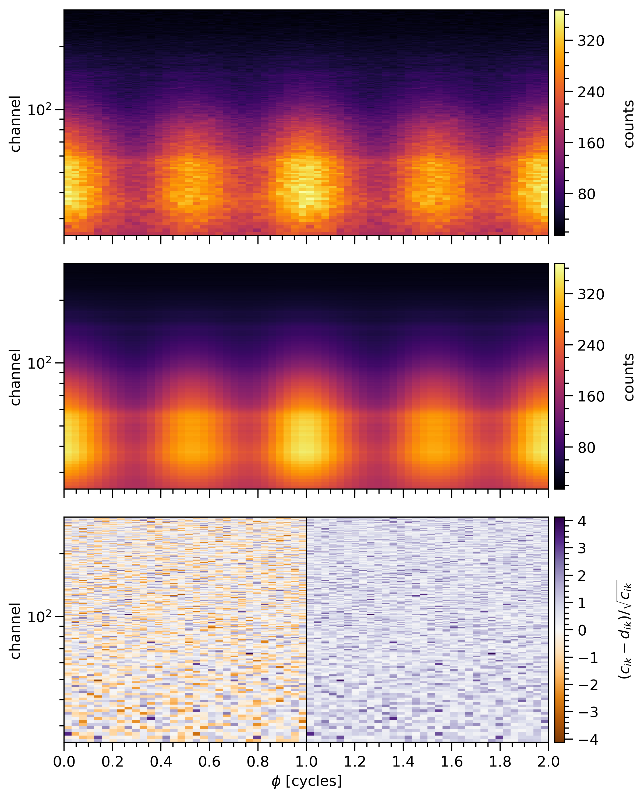
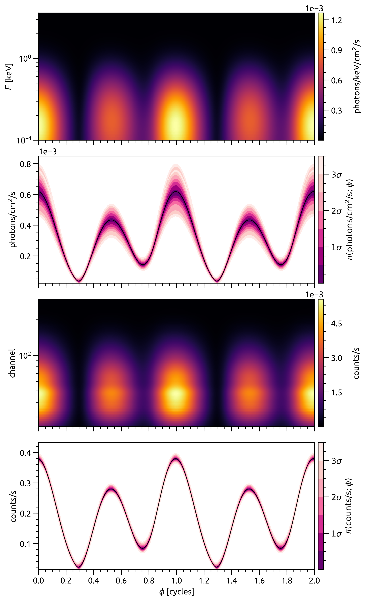
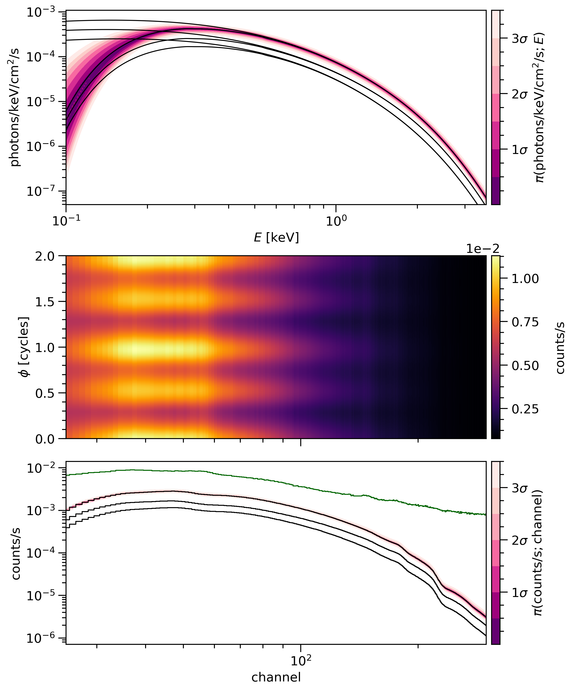

PostProcessing¶
Module for various (posterior) sample post-processing operations.
Users¶
The typical usage pattern is to use the following classes:
Runsto load a set of nested sampling runs on one underlying posterior distribution;
CornerPlotterto plot 1D and 2D marginal posterior density distributions (from a set ofRunsinstances) in lower-triangular form, and to compute various posterior estimators;
SignalPlotterto plot thematic X-ray signals (or, generally, derived quantities) in posterior- expected form or conditional-posterior form, together with ground truths (i.e., injected) and in component form when there are two or more disjoint surface hot regions;to use the
SignalPlotterclass, a user must supply a set of plot class instances for each posterior distribution to be processed, where these native classes areand can be configured both on a class and instance level.
Customization¶
The aforementioned native classes can of course be subclassed if the aim is to wrap, modify, or add functionality too.
In order to make entirely new plot type, we need to subclass the abstract
base class SignalPlot, using the
native subclasses for guidance.
If new plot types are developed, please contribute to the source code via a pull request. Isolate the new functionality in a proposed submodule, adding your authorship information, and supply examples of usage in a Jupyter notebook (either a new tutorial or by extending an existing tutorial as appropriate). The subclass can then be imported from the submodule namespace as shown below for the native classes. Then add the submodule to the Sphinx doc pages. If you can include an example image in the subclass docstring, please do, as it will be rendered directly in the class documentation. Finally, if you can point to a journal article that implements the plot type, please do.
xpsi.PostProcessing.Runs(runs, likelihood, …) |
Container for nested sampling runs on a shared posterior. |
xpsi.PostProcessing.CornerPlotter(posteriors) |
Plot marginal posterior densities and estimators. |
xpsi.PostProcessing.SignalPlotter(posteriors) |
Plot conditional posterior distributions of thematic X-ray signals. |
xpsi.PostProcessing.ResidualPlot([…]) |
Plot the count data, the posterior-expected count signal, and residuals. |
xpsi.PostProcessing.PulsePlot([num_phases, …]) |
Plot posterior-averaged channel-summed count-rate pulse profiles. |
xpsi.PostProcessing.SpectrumPlot([…]) |
Plot posterior-averaged channel count-rate spectra. |
-
class
xpsi.PostProcessing.Runs(runs, likelihood, *args, **kwargs)[source]¶ Bases:
xpsi.PostProcessing._metadata.MetadataContainer for nested sampling runs on a shared posterior.
Parameters: likelihood – The instance of Likelihoodused for sampling, or a clone of that instance. Defaults toNone. If multiple likelihood functions are associated with the runs due to discreteness in the model space, one can pass a dictionary with keys matching the IDs of the runs.-
combined¶ Try to get a combined run in the form of a
nestcheckbackend.
-
get_attr(attribute, current=True, nestcheck_compatible=False)[source]¶ Get a list of attributes of the
Runinstances stored as the current subset.
-
likelihood¶ Get the likelihood instance.
-
classmethod
load_runs(ID, run_IDs, roots, base_dirs, use_nestcheck, likelihood=None, **kwargs)[source]¶ Construct a
Runsinstance by loading distinct runs.The kwargs will be shared by nested sampling runs. The args must be lists that will be zipped to instantiate a set of run backends.
-
runs¶ Get a copy of the list of runs.
-
set_subset(IDs=None, combine=False, combine_all=False, force_combine=False, only_combined=False, only_principal=False, overwrite=False)[source]¶ Set a current list of
Runinstances.
-
subset¶ Get the current subset of runs for plotting.
-
subset_to_plot¶ Get the current subset of runs (+ combined) for plotting.
-
-
class
xpsi.PostProcessing.CornerPlotter(posteriors)[source]¶ Bases:
xpsi.PostProcessing._postprocessor.PostProcessorPlot marginal posterior densities and estimators.
-
KL_divergence(base='bits', bootstrap=False, quantiles=[0.025, 0.5, 0.975], n_simulate=200, **kwargs)[source]¶ Kullback-Leibler divergence integral jointly for all parameters.
E.g., if you want the interval about the median containing divergence of 90% of realisations, declare
quantiles=[0.05,0.5,0.95].
-
evidence_error(quantiles=[0.025, 0.5, 0.975], n_simulate=200, simulate_weights=True, flip_skew=True, **kwargs)[source]¶ Estimate evidence error for nestcheck-compatible runs.
E.g., if you want the interval about the median containing the evidence of 90% of realisations, declare
quantiles=[0.05,0.5,0.95].
-
plot(params, IDs=None, combine=False, combine_all=False, only_combined=False, force_combine=True, overwrite_combined=False, bootstrap_estimators=True, bootstrap_density=False, separate_plots=False, write=False, root_filename='', directory='./', ext='.pdf', dpi=300, maxdots=2000, **kwargs)[source]¶ Generate posterior density plots.
Invokes
getdistandnestcheckfor nested sampling runs.Up to five runs can be plotted natively via
nestcheck; beyond such a number the plots generally display too much information and clarity is lost.Parameters: - params (list) – List of parameter strings for plotting. Must be shared by all
posteriors selected with the
IDsargument. - IDs (OrderedDict) – Keys must be string identifiers of
Runsinstances. Each dictionary element must be a list of string identifiers, each matching objects collected inRunsinstance corresponding to the key. Defaults toNone, meaning attempt to use as many runs as possible subject to plotting restrictions.
Note
The order of IDs is used to control the layering of posteriors. If there are multiple underlying posteriors (i.e., multiple dictionary keys), only one (combined) run per posterior is rendered, and the first posterior is rendered on the topmost layer. If there is only one underlying posterior (i.e., one dictionary keys), then the combined-sample posterior, if available, is plotted on the topmost layer, whilst the runs on that posterior are rendered on layers underneath in the order specified in the list. In either case, estimators are calculated and reported for the (combined) run on the topmost layer.
Parameters: - combine (bool) – Additionally combine the runs into a single run for overplotting? The overriding setting if there is more than one underlying posterior to be plotted, is to attempt to combine runs on each posterior if multiple such runs are available, in order to reduce information density. If there is a single underlying posterior, the user-specified value is respected.
- combine_all (bool) – Combine all runs in each
Runsinstance or only those for which IDs are provided? Ignored ifcombineisFalse. - force_combine (bool) – Force recombination of elligible run sets, even if a combined run is already cached?
- only_combined (bool) – Only plot the combined run? Only heeded if a single posterior
is selected for plotting, and in that case is ignored if
combineisFalse. - overwrite_combined (bool) – Overwrite combined-sample files on disk with the same filename?
- bootstrap (bool) – Use
nestcheckandfgivenxto bootstrap the runs for posterior density error estimation? - separate_plots (bool) – Generate a lower-triangle plot with
getdist, and a separate error plot withnestcheck(withfgivenxandgetdist). IfFalse(default), the diagonal panels of the lower-triangle plot are modified by adding the nestcheck output. Ignored ifbootstrapisFalse. - write (bool) – Export the figure?
- root_filename (str) – Root filename to prepend to automatically generated name. Can be, e.g., a model and/or data set identifier.
- directory (str) – If
Nonedefaults to current directory. - ext (str) – File extension for writing. E.g.,
'.png'. - dpi (int) – Dots-per-square-inch settings for exporting plots.
- kwargs – Keyword arguments for the
_plot_density_with_error()and_plot_triangle()methods. Keyword arguments for line properties (width and alpha) forgetdistcontours and density distributions. Ifbootstrap and not separate_plotsthen the density distribution linewidth is set to zero if not explicitly specified with kwarglw_1d.
- params (list) – List of parameter strings for plotting. Must be shared by all
posteriors selected with the
-
-
class
xpsi.PostProcessing.SignalPlotter(posteriors)[source]¶ Bases:
xpsi.PostProcessing._postprocessor.PostProcessorPlot conditional posterior distributions of thematic X-ray signals.
Methods to plot the data and model for posterior checking.
Plots are generated for each posterior selected using the associated likelihood object.
For a given model, there may be multiple
Signalinstances per likelihood object. If this is the case, you need to reduce the model down to only the objects needed for functioning of theSignalobject to be handled. To do this, simply remove supply to your likelihood object the references to this minimal set of objects. This minimises computation time and ensures explicit declaration of the signals to be plotted.Note
If a model has multiple instruments, then the energy set for signal integration is calculated based on waveband coverage union. If instruments are omitted from the likelihood object in order to execute posterior signal plotting, the number of energies that span the waveband of the remaining instrument waveband should be set to match the number in the full model (with all instruments) if the likelihood factor for the remaining instrument is to be exactly the same.
-
plot(plots, IDs=None, combine=False, combine_all=False, only_combined=False, force_combine=True, nsamples=200, cache=True, force_cache=False, cache_dir='./', read_only=False, archive=True)[source]¶ Compute and plot signals a posteriori.
Parameters: - plots (dict) – Dictionary of lists of plot objects, where each dictionary key must match a posterior ID.
- IDs (OrderedDict) – Keys must be string identifiers of
Runsinstances. Each dictionary element must be a list of string identifiers, each matching objects collected inRunsinstance corresponding to the key. Defaults toNone, meaning attempt to use as many runs as possible subject to plotting restrictions. - cache (bool) – Cache intermediary model objects to accelerate post-processing?
- force_cache (bool) – Force caching irrespective of checks of existing cache files. Useful if some part of the model is tweaked and the cache file with the same name and sample set is not manually moved from the designated directory..
- nsamples (int) – Number of samples to use. Equally-weighted samples are generated, thus introducing a additional Monte Carlo noise which is ignored.
- num_phases (int) – Number of phases to interpolate at on the interval [0,2] cycles.
- filename (str) – Filename of cache.
- cache_dir (str) – Directory to write cache to.
- read_only (bool) – Do not write to cache file?
- archive (bool) – If not read-only, then archive an existing cache file found at the same path?
-
plots¶ Get the dictionary of plot objects last processed.
-
-
class
xpsi.PostProcessing.ResidualPlot(data_cmap='inferno', model_cmap='inferno', residual_cmap='PuOr', **kwargs)[source]¶ Bases:
xpsi.PostProcessing._signalplot.SignalPlotPlot the count data, the posterior-expected count signal, and residuals.
The figure contains three panels which share phase as an x-axis:
- the top panel displays the data count numbers in joint channel-phase intervals, identically split over two rotational phase cycles;
- the center panel displays the posterior-expected count signal over joint channel-phase intervals;
- the bottom panel displays the standardised residuals between the data and posterior-expected count signal over joint channel-phase intervals.
The following example is (improved) from Riley et al. 2019 (ApJL, 887, L21):
Parameters: - data_cmap (str) – Colormap name from
matplotlibto use for the data count numbers over joint channel-phase intervals. - model_cmap (str) – Colormap name from
matplotlibto use for the posterior-expected count numbers over joint channel-phase intervals. - residual_cmap (str) – Colormap name from
matplotlibto use for the residuals between the data and posterior-expected count numbers over joint channel-phase intervals. A diverging colormap is recommended.
-
expected_counts¶ Get the estimated posterior expectation of the count numbers.
-
finalize()[source]¶ Execute instructions to finish plotting.
Before this method is called, the likelihood object will be updated so that the true (injected) signals are cached. In the body of the subclass implementation of this method, one can plot the injected signals by accessing the attributes of the signal instance.
-
model_sum¶ Get the current posterior sum of the count numbers.
-
class
xpsi.PostProcessing.PulsePlot(num_phases=1000, incident_cmap='inferno', registered_cmap='inferno', show_components=False, expectation_line_kwargs=None, comp_expectation_line_kwargs=None, sample_line_kwargs=None, use_fgivenx=False, incident_contour_kwargs=None, registered_contour_kwargs=None, plot_truth=False, truth_line_kwargs=None, comp_truth_line_kwargs=None, **kwargs)[source]¶ Bases:
xpsi.PostProcessing._signalplot.SignalPlotPlot posterior-averaged channel-summed count-rate pulse profiles.
The figure contains four panels which share phase as an x-axis:
- the first (topmost) panel displays the posterior expectation of the specific photon flux signal from the source, jointly resolved in energy and phase;
- the second panel displays the energy-integrated photon specific flux
signal as function of phase for a subset of samples, optionally using
fgivenx; - the third panel displays the posterior expectation of the count-rate signal as a function of channel and phase;
- the last (bottommost) panel displays the channel-summed pulse as
a function of phase for a subset of samples, optionally using
fgivenx.
The second and last panels aim to render the conditional posterior distribution of the associated signal as a function phase, ideally with contours to map out the conditional posterior mass. These panels have space to optionally display other elements such as: the posterior-expected total signal; the posterior-expected component signals; and the true total and component signals if the ground truth (the injected signal correpsonding to some model parameter vector) is known.
The following example is from Riley et al. 2019 (ApJL, 887, L21):
Parameters: - num_phases (int) – The number of phases to interpolate the pulse-profile signals at.
- incident_cmap (str) – Colormap name from
matplotlibto use for the posterior-expected incident signal as a function of energy and phase (top panel). - registered_cmap (str) – Colormap name from
matplotlibto use for the posterior-expected registered signal as a function of channel and phase (third panel). - show_components (bool) – If the
Signalinstance has multiple components, display the posterior expectations of those components as a function of phase (second and last panels). - expectation_line_kwargs (dict) – Keyword arguments for plotting the posterior-expected signal lines (in the second and last panels).
- use_fgivenx (bool) – Use
fgivenxto plot conditional posterior contours in the second and last panels? - incident_contour_kwargs (dict) – Keyword arguments for
fgivenxincident signal contours (second panel) that will take precedence over the corresponding class attributes. (See theSignalPlotclass if you choose not to modify these attributes on this present subclass.) - registered_contour_kwargs (dict) – Keyword arguments for
fgivenxregistered signal contours (last panel) that will take precedence over the corresponding class attributes. (See theSignalPlotclass if you choose not to modify these attributes on this present subclass.) - plot_truth – Plot the ground truth (injected) signal, if known and available, in the second and last panels.
- truth_line_kwargs – Keyword arguments for plotting the ground truth signal lines (second and last panels).
-
expected_incident¶ Get the expectations of the component incident signals.
-
expected_registered¶ Get the expectations of the component registered signals.
-
class
xpsi.PostProcessing.SpectrumPlot(rel_num_energies=10.0, num_phases=1000, registered_cmap='inferno', show_components=False, show_attenuated=True, expectation_line_kwargs=None, comp_expectation_line_kwargs=None, add_background=False, background_line_kwargs=None, sample_line_kwargs=None, use_fgivenx=False, incident_contour_kwargs=None, registered_contour_kwargs=None, plot_truth=False, truth_line_kwargs=None, comp_truth_line_kwargs=None, **kwargs)[source]¶ Bases:
xpsi.PostProcessing._signalplot.SignalPlotPlot posterior-averaged channel count-rate spectra.
The figure contains three panels which share phase as an x-axis:
- the top panel displays the specific photon flux signal
from the source, resolved as a function of energy, optionally showing
both unattenuated and attenuated incident spectra and optionally
using
fgivenx; - the center panel displays the posterior expectation of the count-rate signal as a function of channel and phase, optionally including an expected background signal;
- the bottom panel displays the phase-integrated (averaged) count-rate
spectum as a function of channel number, optionally including an
expected background signal and optionally using
fgivenx.
The top and bottom panels aim to render the conditional posterior distribution of the associated signal as a function an energy (proxy) variable, ideally with contours to map out the conditional posterior mass. These panels have space to optionally display other elements such as: the posterior-expected total signal; the posterior-expected component signals; the true total and component signals if the ground truth (the injected signal correpsonding to some model parameter vector) is known; attenuated incident spectra; and the summation of posterior-expected total (component-summed) source count-rate signals with posterior-expected background count-rate signals.
The following example is (improved) from Riley et al. 2019 (ApJL, 887, L21):
Parameters: - rel_num_energies (float) – The number of energies desired for interpolation as a fraction of the number of energies implemented for the original incident signal integration. The energy set will be appropriately spaced and bounded.
- num_phases (int) – The number of phases to interpolate the pulse-profile signals at for the center panel.
- registered_cmap (str) – Colormap name from
matplotlibto use for the posterior-expected registered signal as a function of channel and phase (center panel). - show_components (bool) – If the
Signalinstance has multiple components (hot region signals), display the posterior expectations of those components as a function of energy (top panel) and channel (bottom panel). - show_attenuated (bool) – If the source signal is attenuated by the interstellar absorption
processes, display the posterior-expected attenuated incident specific
photon flux spectra? This switch also instructs
fgivenx, if enabled, to generate conditional posterior contours for the attenuated spectrum instead of the unattenuated spectrum (top panel). Iffgivenxis not invoked, this switch instructs the plotting of sample-by-sample attenuated total (component-summed) spectra to delineate the distribution of conditional posterior mass (top panel). - expectation_line_kwargs (dict) – Keyword arguments for plotting the posterior-expected signal lines (in the top and bottom panels).
- add_background (bool) – Add an posterior-expected background count-rate signal to the total (component-summed) expected source count-rate signals in the center and bottom panels?
- background_line_kwargs (dict) – Keyword arguments for plotting the posterior-expected spectrum in the bottom panel that includes the background signal.
- use_fgivenx (bool) – Use
fgivenxto plot conditional posterior contours in the top and bottom panels? - incident_contour_kwargs (dict) – Keyword arguments for
fgivenxincident signal contours (top panel) that will take precedence over the corresponding class attributes. (See theSignalPlotclass if you choose not to modify these attributes on this present subclass.) - registered_contour_kwargs (dict) – Keyword arguments for
fgivenxregistered signal contours (bottom panel) that will take precedence over the corresponding class attributes. (See theSignalPlotclass if you choose not to modify these attributes on this present subclass.) - plot_truth – Plot the ground truth (injected) signal, if known and available, in the top and bottom panels.
- truth_line_kwargs – Keyword arguments for plotting the ground truth signal lines (top and bottom panels).
- comp_truth_line_kwargs – Keyword arguments for plotting the component ground truth signal lines (top and bottom panels).
-
execute(thetas, wrapper)[source]¶ Execute behaviours requiring a loop over samples.
Parameters: - thetas (ndarray[n,m]) – Equally-weighted set of posterior samples.
- wrapper (callable) – Wrapper function that interleaves iterative calls next(self)
with code to update the
Signalinstance from a cache stored on disk. The wrapper returns a callback function, If such a cache is unavailable, the likelihood function is evaluated on-the-fly when the callback is called passing a sample (parameter vector). In this case, signals to be plotted are temporarily cached in theSignalinstance. The signature of the wrapper function is: wrapper(self, delete_me=None, index=None), where self is this a subclass ofSignalPlot, delete_me is an optional attribute name or a list of attribute name in self.__dict__ to be deleted before iterating over samples, and index is an optional integer to index a tuple returned from next(self). The signature of the callback function, if you need to call it directly (instead of an external library such as fgivenx calling it): callback(None, theta), where each sample/parameter vector is a row in thetas.
-
expected_attenuated_incident¶ Get the expectations of the incident (component) spectra.
-
expected_background¶ Get the expectation of the background count-rate spectrum.
-
expected_incident¶ Get the expectations of the incident (component) spectra.
-
expected_registered¶ Get the expectations of the registered count-rate spectra.
- the top panel displays the specific photon flux signal
from the source, resolved as a function of energy, optionally showing
both unattenuated and attenuated incident spectra and optionally
using
Base classes for development¶
xpsi.PostProcessing._signalplot.SignalPlot([…]) |
Base class for a signal plot. |
xpsi.PostProcessing._postprocessor.PostProcessor(…) |
Post-process samples for inference and posterior checking. |
xpsi.PostProcessing._backends.NestedBackend(…) |
Container for nested samples generated by a single run, and backends for analysis of the run. |
xpsi.PostProcessing._run.Run(filepath, **kwargs) |
Base class for a sample container. |
xpsi.PostProcessing._metadata.Metadata(ID, names) |
Base class to record basic information about sampling runs. |
-
class
xpsi.PostProcessing._signalplot.SignalPlot(fig_dir='./', root_filename='', cmap='RdPu_r', **kwargs)[source]¶ Base class for a signal plot.
Interact with a single
Signalinstance to plot signals.Parameters: - fig_dir (str) – Directory to write to.
- root_filename (str) – Prepended to filename automatically generated figure filename.
- cmap (str) – Colormap name from
matplotlibto use forfgivenxcontours. It is advisable to choose a colormap that is darker at lower values (in tails of conditional posterior distribution) and lighter at higher values (at higher densities in conditional posterior distribution).
-
classmethod
declare_settings(panelsize=(8, 4), fscale=1.0, rasterized=True, tick_lengths=(8, 4), tick_width=1.0, logspace_y=False, tqdm_kwargs={'disable': False}, scale_ymin=0.9, scale_ymax=1.1, ny=500, lines_on=False, add_label=True, write=True, extension='.pdf', dpi=300, write_kwargs=None)[source]¶ Configure subclass with attributes, before instantiation.
These attributes can in principle be safely changed during the runtime.
Parameters: - panelsize (tuple) – The approximate size,
(width, height), in inches per panel. - fscale (float) – Scale factor for the fontsize applied to the default.
- rasterized (bool) – Beware that if
False, white polygon edges may appear in figures. - int) tick_lengths (tuple(int,) – The major and minor tick lengths for all axis objects.
- tick_width (int) – The width of every tick.
- logspace_y (bool) – Should the
fgivenxy-values (for which the posterior mass is integrated over points at lower densities than the density at y) be logarithimcally or linearly spaced? Appropriate for logarithmic y-axes of signal panels. - tqdm_kwargs (dict) – Progress bar keyword arguments.
- scale_ymin (float) – The minimum y-value to use, as a fraction of the minimum sample value.
- scale_ymax (float) – The maximum y-value to use, as a fraction of the minimum sample value.
- ny (int) – Number of y-values to compute the posterior mass for.
- lines_on (bool) – Render contour lines?
- add_label (bool) – Add contour colorbar label.
- write (bool) – Write figure to disk?
- extension (str) – File extension for writing.
- dpi (int) – Figure write resolution.
- write_kwargs (dict) – Additional writing keyword arguments.
- panelsize (tuple) – The approximate size,
-
execute(thetas, wrapper)[source]¶ Execute behaviours requiring a loop over samples.
Parameters: - thetas (ndarray[n,m]) – Equally-weighted set of posterior samples.
- wrapper (callable) – Wrapper function that interleaves iterative calls next(self)
with code to update the
Signalinstance from a cache stored on disk. The wrapper returns a callback function, If such a cache is unavailable, the likelihood function is evaluated on-the-fly when the callback is called passing a sample (parameter vector). In this case, signals to be plotted are temporarily cached in theSignalinstance. The signature of the wrapper function is: wrapper(self, delete_me=None, index=None), where self is this a subclass ofSignalPlot, delete_me is an optional attribute name or a list of attribute name in self.__dict__ to be deleted before iterating over samples, and index is an optional integer to index a tuple returned from next(self). The signature of the callback function, if you need to call it directly (instead of an external library such as fgivenx calling it): callback(None, theta), where each sample/parameter vector is a row in thetas.
-
fig¶ Get the figure object.
-
finalize()[source]¶ Execute instructions to finish plotting.
Before this method is called, the likelihood object will be updated so that the true (injected) signals are cached. In the body of the subclass implementation of this method, one can plot the injected signals by accessing the attributes of the signal instance.
-
class
xpsi.PostProcessing._postprocessor.PostProcessor(posteriors)[source]¶ Post-process samples for inference and posterior checking.
Base class that functions as a container for nested sampling run objects representing some set of posterior distributions that share some subset of parameters of interest that are to be plotted. The parameters can be shared in the sense that their relationship is the identity relation, or multiple physical objects in a population context each have an instance of a parameter type. An example of the former is the mass of a star, for which there are two or more distinct posterior distributions, due, e.g.:
- to sequential inference conditional on independent data sets, where each posterior is an updated of the previous in the sequence;
- inference conditional on independent data sets, where the different analyses invoked same [different] prior models and one simply wants to overlay the posteriors e.g., to gauge the synergy of different experiments [and argue the priors are weakly informative/ diffuse in the context of the likelihood functions];
- to analysis of a single data set but the effective existence of discrete hyperparameter resulting in posteriors conditional on the discrete label over population-level prior distributions that has not been marginalized over (i.e., the problem of choosing an appropriate the hierarchical prior model);
- to competing models, where models can differ in the likelihood function, prior density, or both.
An example of the latter is two more (neutron) stars, each with a mass; these masses collectively encode interesting population-level information.
Subclasses will calculate inferences, usually in the form of approximate integrals over the posterior distribution. They will also provide tools for visualisation of posterior information and derived quantities, which is useful for basic posterior predictive checking.
Parameters: posteriors (iterable) – An iterable of instances of Runs.-
get_attr(attribute)[source]¶ Get a list of attributes of the
Runsinstances stored as the current subset.
-
params¶ Get the current parameter information.
-
posteriors¶ Get the posteriors.
-
set_subset(IDs=None, combine=False, combine_all=False, force_combine=True, only_combined=False, overwrite=False)[source]¶ Set a current list of
Runsinstances.Helper function to get and notify which runs will be plotted.
Parameters: - IDs (OrderedDict) – A dictionary of lists, where keys match
Runsinstance IDs, and list elements matchRuninstance IDs. If no key matches aRunsinstance ID, it is assumed that all associatedRuninstances are to be selected as the current subset for plotting applications. - combine (bool) – Additionally combine the runs into a single run for overplotting? The overriding setting if there is more than one underlying posterior to be plotted, is to attempt to combine runs on each posterior if multiple such runs are available, in order to reduce information density. If there is a single underlying posterior, the user-specified value is respected.
- combine_all (bool) – Combine all runs in each
Runsinstance or only those for which IDs are provided? Ignored ifcombineisFalse. - force_combine (bool) – Force recombination of elligible run sets, even if a combined run is already cached?
- only_combined (bool) – Only plot the combined run? Only heeded if a single posterior
is selected for plotting, and in that case is ignored if
combineisFalse. - overwrite (bool) – Overwrite combined-sample files on disk with the same filename?
- IDs (OrderedDict) – A dictionary of lists, where keys match
-
subset¶ Get the current subset of posteriors for plotting.
-
subset_to_plot¶ Get the current subset of runs for plotting.
-
class
xpsi.PostProcessing._backends.NestedBackend(root, base_dir, use_nestcheck, transform=None, overwrite_transformed=False, **kwargs)[source]¶ Bases:
xpsi.PostProcessing._run.RunContainer for nested samples generated by a single run, and backends for analysis of the run.
The other keyword arguments are generic properties passed to the parent class, such as the identification (ID) string of the run.
Parameters: - root (str) – The root filename of the sample file collection.
- base_dir (str) – The directly containing the sample file collection.
- use_nestcheck (bool) – Invoke
nestcheckfor nested sampling error analysis? - transform (callable) – A function to transform the parameter vector to another space.
-
getdist_backend¶ Get the
getdist.mcsamples.MCSamplesinstance.
-
margeStats¶ Return the marginal statistics using
getdist.
-
nestcheck_backend¶ Get the
nestcheckbackend for the nested samples.
-
class
xpsi.PostProcessing._run.Run(filepath, **kwargs)[source]¶ Bases:
xpsi.PostProcessing._metadata.MetadataBase class for a sample container.
-
contours¶ Get the dictionary of contour arguments for
getdist.Parameters: contours (dict) – getdist-compatible dictionary of parameters specifying the properties of the contours representing credible regions of the two-dimensional marginal distributions of parameters.
-
lines¶ Get the dictionary of line arguments for
getdist.Parameters: lines (dict) – getdist-compatible dictionary of parameters specifying the properties of the smooth lines representing one-dimensional marginal distributions of parameters.
-
samples¶ Get a copy of the samples array.
-
-
class
xpsi.PostProcessing._metadata.Metadata(ID, names, bounds=None, labels=None, implementation=None, kde_settings=None, truths=None)[source]¶ Base class to record basic information about sampling runs.
Parameters: - ID (str) – For identification of the object.
- names (list) – An ordered list of
strparameter names. The ordering must match the parameter vector ordering defined in sample backend objects. - bounds (dict) – A dictionary of one-dimensional hard parameter bounds. See
getdist.mcsamples.MCSamples; the keys must match thenameslist. For the purpose of density estimation plots these bounds can be viewing bounds. - labels (list) – An ordered list of (LaTeX compatible)
strliteral parameter labels. - implementation (str) – Sampling software applied to generate the samples. Known options are
['multinest', 'polychord', 'emcee']. - kde_settings (dict) – Settings for instantiation of
getdist.mcsamples.MCSamples. - truths (dict) – Optional dictionary of parameter truths, if known; if unknown
leave as
None. The keys must be names which match those innames.
-
ID¶ Get the identification
strof the sample set.
-
bounds¶ Get the parameter bounds.
-
implementation¶ Sampling software applied to generate the samples of the run.
-
kde_settings¶ Get the input
getdistKDE settings dictionary.
-
labels¶ Get the parameter labels.
-
names¶ Get the parameter names.
-
parent_ID¶ The ID of the parent container with which a run is associated.
-
prepend_ID¶ Prepend the run ID with the parent ID.
-
truth_vector¶ Get the parameter truths as a list.
-
truths¶ Get the parameter truths as a dictionary.